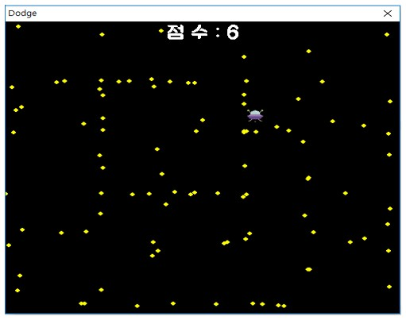

MiniGames
프로젝트 이름 : Mini Games
프로젝트 기간 : 2018-04-07 ~ 2018-04-15
개발 언어 : Java
개발 목표 : 누구나 한번 쯤 해봤을만한 고전게임처럼 단순하고 중독성 있는 게임들을 모아놓은 프로그램 만들기

폭탄 피하기 / 닷지
떨어지는 폭탄을 피하거나 공격을 피하는 게임이다.
후기
매번 책에 있는 예제를 따라치거나, 학교에서는 간단한 과제를 제출했기 때문에 자바로 제대로 된 프로그램을 만든 적이 없었다. 또한 학교에 다닐때 이론과목을 제외하고 프로그래밍 과목에서 제대로된 팀 프로젝트를 한 적이 없었다. 처음으로 이 프로젝트를 시작했을때 과연 내가 다른 사람들과 소통하여 프로그램들을 만들 수 있을까 걱정부터 했던 것 같다. 하지만 프로젝트를 진행하고 무사히 프로그램을 완성했을 때는 나도 다른사람과 의견을 교환하며 프로그램을 만들 수 있구나 하는 자신감을 얻었던 것 같다.